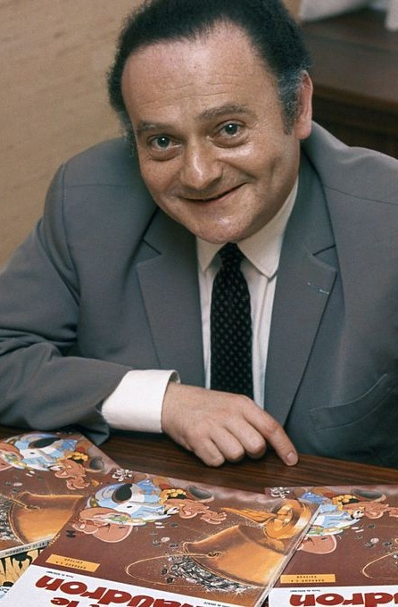

La série met en scène les habitants d'un petit village gaulois d'Armorique qui, en 50 av. J.-C., poursuivent seuls la lutte contre l'envahisseur grâce à une potion magique inventée par leur druide.
Astérix est une série de bande dessinée française créée le 29 octobre 1959 par René Goscinny et Albert Uderzo.
Albert Uderzo, nom de plume d'Alberto Aleandro Uderzo, né le 25 avril 1927 à Fismes (Marne) et mort le 24 mars 2020 à Neuilly-sur-Seine (Hauts-de-Seine), est un auteur de bande dessinée français, un éditeur et un homme d'affaires. Il travaille notamment pour les journaux France-Soir et France Dimanche, et pour les magazines Tintin et Pilote. Avec Jean-Michel Charlier, il est l'auteur de la série Tanguy et Laverdure. Il crée également avec René Goscinny, les séries Oumpah-Pah et Astérix. → Cliquez ici pour plus d'informations sur Uderzo
René Goscinny, né le 14 août 1926 à Paris et mort le 5 novembre 1977 dans la même ville, est un scénariste de bande dessinée, journaliste, écrivain et humoriste français, également producteur, réalisateur et scénariste de films.Il est l'un des fondateurs et rédacteurs en chef de Pilote, un magazine de bande dessinée. Créateur d'Astérix avec Albert Uderzo, d'Iznogoud avec Jean Tabary, auteur du Petit Nicolas, personnage créé et dessiné par Jean-Jacques Sempé, scénariste de nombreux albums de Lucky Luke créé par Morris, il est l’un des auteurs français les plus lus au monde : l’ensemble de son œuvre représente environ 500 millions d’ouvrages vendus. → Cliquez ici pour plus d'informations sur Goscinny
